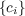
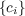
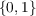

Digital Audio-Watermarking
für analoge Übertragungsstrecken
BACHELORARBEIT
von
unter der Betreuung von
Dipl.-Ing. Mag. Dr. Matthias Zeppelzauer
Institut für Softwaretechnik und Interaktive Systeme
Interactive Media Systems Group
Fakultät für Informatik
Technische Universität Wien
Erklärung zur Verfassung der Arbeit
Hiermit erkläre ich, dass ich diese Arbeit selbständig verfasst habe, dass ich die verwendeten Quellen und Hilfsmittel vollständig angegeben habe und dass ich die Stellen der Arbeit - einschließlich Tabellen, Karten und Abbildungen -, die anderen
Werken oder dem Internet im Wortlaut oder dem Sinn nach entnommen sind, auf jeden Fall unter Angabe der Quelle als Entlehnung kenntlich gemacht habe.
Danksagung
Es gilt einigen Personen zu danken:
Meinem Betreuer Matthias Zeppelzauer, unter dessen Anleitung diese Arbeit entstanden ist.
Jürgen Köchl, der sich ab und an die Zeit stehlen ließ um mit mir über die Freuden der Signalverarbeitung zu diskutieren.
John-Paul „hukl“ Bader, der mit seinen Beträgen zu analogem und digitalem Audio in den Podcasts Freakshow 1 und 300Hertz2 mehr als einmal an einer Eingebung Schuld trägt.
Und ganz besonders Shijun Xiang, der mich mit seinen typografischen Ausrutschern auf die lange Suche nach einem nicht existierenden Layer 8 Problem schickte.
Abstract
While digital audio watermarking is already a widespread practice, most research only concern copyright protection mechanisms. An aim on open information integration is hardly ever a focus of development goals. Yet there are use cases were additional information in audio signals would be of most value. Especially digital/analog (DA) conversion processes tend to lose all sorts of metadata, for them not being translated into acoustic signals. This is where watermarks may come to aid. Also they could be utilized to add additional information to radio and TV broadcast which would make them accessible not only to the receiving device.
This paper describes the implementations of an existing watermarking algorithm claiming to be capable of enduring DA conversions. Additionally a framework is proposed to utilize the algorithm in a developed communication protocol with synchronization-codes and error-correction mechanisms to provide a well defined, stable communication channel.
Kurzfassung
Während digitales Audio-Watermarking einen an sich viel beachteten Bereich darstellt, beschränkt sich die Forschung dennoch hauptsächlich auf Anwendungsgebiete rund um Urheberrechtsschutz. Eine Ausrichtung auf offen eingebrachte Information ist kaum im Fokus der Entwicklung. Doch gibt es durchaus Anwendungsfälle in denen Zusatzinformationen in Audiosignalen einen erheblichen Mehrwert bedeuten können. Vor allem bei der Digital/Analog Wandlung gehen in der Regel sämtliche Metadaten eines Audiosignals verloren, da diese nicht in akustische Signale mit überführt werden. Hier können Watermarks Abhilfe schaffen. Auch könnten sie genutzt werden um in Radio- oder Fernsehübertragungen gezielt zusätzliche Informationen einzubauen, welche auch von anderen Geräten als dem ursprünglichen Empfangsgerät verarbeitet werden könnten.
Diese Arbeit beschäftigt sich mit der Implementierung einer vorhandenen Audio-Watermarking Methode welche für die DA- und AD-Wandlung geeignet sein soll. Weiters wurde für deren Verwendung ein Framework entwickelt, welches mittels eines eigens entwickelten Übertragungsprotokolls unter Verwendung von Synchronisations-Codes und Fehlerkorrekturverfahren einen definierten Übertragungskanal bereitstellt.
Inhaltsverzeichnis
1.1 Motivation
1.2 Digitale und analoge Daten
1.3 Digitale Wasserzeichen
1.4 Anwendungsgebiete
1.5 Ziele
2 Theoretische Grundlagen
2.1 Diskrete Wavelet-Transformation
2.2 Einbettungsstrategie
2.3 Ausbreitung auf mehrere Bits
2.4 Rekonstruktion
2.5 Einbettungskapazität
3 Implementierung
3.1 Architektur
3.2 Watermark Implantierung
3.2.1 Synchronisations-Codes
3.2.2 Fehlerkorrekturverfahren
3.2.3 Datenstrukturen und Protokoll
3.2.4 Qualitätskontrolle
3.3 Watermark Extrahierung
3.3.1 Resynchronisaton und Interpolation
3.3.2 Datenextrahierung
4 Analyse
4.1 Hörbarkeit
4.2 Stirmark Benchmarks
4.3 Resampling
4.4 Kompression
4.5 Datenrate
4.6 Ursachenforschung
5 Schlussfolgerung und Ausblick
A PEAQ Implementierungen
A.1 EAQUAL
A.2 PQevalAudio
A.3 peaqb
A.4 OPERA
B Tutorial zur Implementation
C Stirmark for Audio Testautomation
Abkürzungsverzeichnis
Abbildungsverzeichnis
3.2 Schematischer Aufbau des Implemetierungsprozesses
3.3 sync Erkennung
3.4 Hierarchischer Aufbau des Protokolls
3.5 Schematischer Aufbau des Extraktionsprozesses
4.1 Frequenzspektrum eines Signals mit Watermark
4.2 Frequenzspektrum nach DA- und AD- Wandlung
Tabellenverzeichnis
4.2 Robustheit gegen die Stirmark for Audio Angriffe
4.3 Datenrate in Abhängigkeit der Samplerate
Kapitel 1
Einführung
1.1 Motivation
Die Digitalisierung unserer Welt schreitet seit über 50 Jahren stetig voran. Immer mehr liegt nur mehr in digitaler Form vor. Und durch die wachsende Vernetzung stehen diese Daten vor allem seit dem neuen Jahrtausend immer mehr Menschen mit immer weniger Aufwand jederzeit zur Verfügung.
Doch es ergibt sich daraus auch ein Problem: Was liegt eigentlich vor? Digitale (und vor allem multimediale) Daten sagen per se nichts über ihre Bedeutung aus. Sie bekommen diese durch den Betrachter. Doch aus diversen Gründen, ganz voran alleine um sie sortieren und suchen zu können, ist es aber interessant ihnen bereits vorher eine gewisse Bedeutung zuzuschreiben. Dadurch wurde in den letzten Jahren ein Stichwort groß: Metadaten. Metadaten sind „Daten über Daten“. Mit ihnen wird versucht vorliegende Daten zu beschreiben (z.B. Genre eines Musikstücks), zusätzliche Informationen über sie vorzuhalten (Künstler und Album eines Musikstücks), diese maschinenlesbar bereitzustellen (ID3-Tags bei MP3) und wenn möglich auch direkt mit den Daten zu verknüpfen (Kapitelmarken in MP4/M4B Hörbüchern).
Das Problem bei Metadaten ist sie bereitzustellen und vorzuhalten. Seit dem Ausbau der digitalen Vernetzung liegen Metadaten oft nicht mehr direkt bei den eigentlichen Daten. Oftmals sind sie auf einem externen Server und werden bei Bedarf angefordert. Die Metadaten sind nur dann zugänglich, wenn der Server verfügbar ist und ein Mechanismus existiert mit dem die Daten eindeutig mit den Metadaten am Server verknüpft werden können. Eine Datei kann auch durch eine zusätzliche standardisierte Datei im selben Namespace beschrieben werden (etwa via XML). Kopiert man jedoch nur die ursprünglichen Daten, nicht aber ihre Metadaten, so geht die zusätzliche Information verloren.
Es ist daher oftmals wünschenswert die Metadaten direkt in den eigentlichen Daten vorzuhalten. Eine der vielleicht bekanntesten Formen dieser Art der Metadatenspeicherung sind die bereits oben erwähnten MP3 Tags. Hier werden die Metadaten einfach am Ende des Audiosignals angehängt. Diese Form der Metadatenspeicherung ist vor allem bei digitalen, multimedialen Daten besonders beliebt. Nicht zuletzt die MPEG 1 treibt diese Entwicklung mit ihren Standards auch rege voran.
1.2 Digitale und analoge Daten
Bei digitalen Daten lassen sich die Metadaten oftmals noch recht einfach direkt zu den eigentlichen Daten speichern. Es muss nur einen entsprechenden Standard geben wie diese an die Daten angehängt werden können. Doch vor allem multimediale Daten existieren in der Regel nicht nur in digitaler Form. Spätestens wenn sie konsumiert (betrachtet, gehört) werden sollen müssen sie auf die eine oder andere Art in eine analoge Form gebracht werden. Dabei gehen die Metadaten meistens verloren. Dem wird entgegen gesetzt, dass die Metadaten meistens an diesem Punkt auch angezeigt werden. Die meisten MP3 Player zeigen während des Abspielens den Tracktitel und Artist an. Allerdings ist der Lifecycle der Metadaten an dieser Stelle auch beendet. Werden die nun analogen Daten weiter aufgezeichnet, verarbeitet und verwendet, so ist ihre Beschreibung verloren gegangen, wenn sich nicht jemand explizit „von Hand“ weiterträgt. Es wäre also Wünschenswert wenn die Metadaten auch im analogen Zustand Teil der Daten wären.
1.3 Digitale Wasserzeichen
Digitale Wasserzeichen (engl. Digital Watermarks) sind sämtliche Verfahren die ein digitales Signal (Audio, Video, aber auch nur einfache Bilder) so verändern, dass in ihm ein weiteres Signal versteckt ist. Da dieses zusätzliche Signal in der Regel unwahrnehmbar ist (oder zumindest sein soll) ist die Einbettung dieses versteckten Signals in der ursprüngliche (das Trägersignal) also eine steganographische Methode. Somit kann beispielsweise ein Bild in einem anderen Bild versteckt werden. Zu beachten ist natürlich, dass die Einbettungskapazität durchaus limitiert ist, da die Qualität des Trägersignal nicht maßgeblich beeinträchtigt werden soll.
Prinzipiell lassen sich Watermarks in 2 Kategorien unterteilen [1]:
- Secret watermarks
- sollen unauffindbar sein, außer für jene die dazu berechtigt sind. Sie stellen einen gesicherten übertragungskanal zwischen den autorisierten Personen dar, die zu den versteckten Informationen durch ihr Wissen um ein geheimes Verfahren oder einen geheimen Schlüssel Zugang haben. Die Existenz des Watermarks an sich sollte nach Möglichkeit für Unautorisierte nicht erkennbar sein.
- Public watermarks
- sollen für jeden unter Anwendung des Dekodierungsverfahrens lesbar sein. Sie sind somit ein öffentlicher übertragungskanal, da das Verfahren transparent gestaltet ist.
1.4 Anwendungsgebiete
Digitale Wasserzeichen erfreuen sich zunehmender Beliebtheit seitdem es möglich ist praktisch kostenlos perfekte digitale Kopien von Audio, Video, Bildern und Texten herzustellen [2]. Indem in mediale Daten Wasserzeichen eingebracht werden, wird Urheberschaft kenntlich gemacht und Copyrightanliegen können verfolgt werden. In Bildern wird ein Wasserzeichen eingebracht, das nicht sichtbar ist, trotzdem bei Bedarf aus dem Bild eindeutig extrahiert werden kann. Somit kann überprüft werden, ob Bilder unlizenziert Verwendung finden. In Musikdateien ermöglichen individuelle Wasserzeichen zu jedem Track den ursprünglichen Käufer ausfindig zu machen, seitdem es Dank des MP3-Komprimierungsverfahrens möglich geworden ist Musikdateien in geringer Datengröße und dennoch guter Qualität problemlos (und oftmals illegal) durch das Internet zu kopieren. Bei Videodaten kann festgestellt werden, ob diese nachträglich verändert wurden (bei Beweisaufnahmen etwa).
In den Anfangszeiten der digitalen Wasserzeichen wurden auch überlegungen angestellt wie die aufkommenden DVDs so gekennzeichnet werden könnten, dass eine Kopierung nur im Rahmen des erlaubten Copyrights stattfindet [3]. Die Idee war alle DVD Player so zu programmieren, dass sie keine Kopien von kommerziellen Inhalten anfertigen. TV-Ausstrahlungen würden hingegen so gekennzeichnet, dass sie genau einmal kopiert werden könnten. Private Aufnahmen wären unlimitiert kopierbar.
Jedoch existieren nur wenige Verfahren, die Digital/Analog Wandlung überstehen. Dementsprechend wenig Konzepte bringen Watermarks in analogen Audiosignalen zur Anwendung (ein Beispiel wäre [4]). Es wäre aber denkbar, dass mittels einer effektiven Methode zum Beispiel Radio- und Fernsehübertragungen mit zusätzlichen Informationen erweitert werden, die über die akustische Ebene nicht nur dem eigentlichen Empfangsgerät zugänglich gemacht werden.
1.5 Ziele
In dieser Arbeit wird versucht ein transparentes Watermarkingverfahren für digitale Audiosignale umzusetzen, welches die übertragung über eine analoge übertragungsstrecke (etwa Luft) übersteht. Damit könnten Metadaten direkt in Audiosignalen untergebracht und erhalten werden, auch wenn sie über ein Lautsprechersystem abgespielt werden. Entsprechende Empfangsgerät (z.B. ein Handy) könnten dann das Signal aufnehmen und die darin enthaltenen Daten wieder rekonstruieren. Ein denkbarer Anwendungsfall wären etwa Metadaten über das Programm eines Radiosenders. Verfahren zum Urheberrechtsschutz sind im aktuellen Stand der Technik weit ausgereift. Hingegen wurde bisher nur wenig Augenmerkt auf die Resistenz bei DA/AD Wandlung gelegt, da dies zur Beseitigung der Copyright-Watermarks kaum ein angewandter Angriffsvektor ist. Die Auswirkungen auf die resultierende Qualität sind in der Regel zu massiv.
Diese Arbeit stützt sich vor allem auf das von Shijun Xiang [5] vorgeschlagene Audio-Watermarkingverfahren für DA/AD-Wandlung. Dokumentiert ist hier die Implementierung dieser sowie deren Erweiterungen und Modifikationen.
Kapitel 2
Theoretische Grundlagen
Um ein Signal mit zusätzlichen Informationen anzureichern muss das Signal auf die eine oder andere Art so verändert werden, dass die Änderungen eindeutig rekonstruierbar sind. Weiters müssen Sie einer gewissen Logik folgen, damit anschließend wieder auf die Information geschlossen werden kann. Es ist selbstverständlich essentiell, dass die Art der Informationsanreicherung stabil ist, d.h. die Veränderungen so geschehen, dass eine 1 eindeutig wieder als 1 erkannt wird.
Die mathematische Grundlage der in dieser Arbeit verwendeten Methode um einen Teil eines Signals so zu verändern, dass daraus wieder auf einen logischer Wert (0 oder 1) geschlossen werden kann, beruht auf dem in [5] publizierten Verfahren.
In diesem und den folgenden Kapiteln werden immer wieder Notationen benutzt, die von denen von [5] abweichen um ein konsistenteres Bezeichnungsschema für die Beschreibung der Erweiterungen zu erreichen. Die in den nächsten Abschnitten vorgestellten Begriffe werden daher oft mit Bezeichnung und Symbol eingeführt. Die Bezeichnungen sind meistens in englischer Sprache, da diese in der wissenschaftlichen Literatur so verwendet werden und eine Übersetzung ins Deutsche dem geneigten Leser nur die Zuordnung der Begriffe erschweren würde. Die Symbole sind hierfür eine alternative Kurzschreibweise die vor allem in Formeln Verwendung finden werden.
Grundlegend müssen wir zuerst klären, über welche Art von Signal hier überhaupt gesprochen wird. Signale können an sich unterschiedlichster Natur sein. Wir hier wollen mit „Signal“ ganz allgemein die Repräsentation einer akustischen Information bezeichnen. In der Tontechnik spricht man von Audiosignalen als Bezeichnung für all das „was man hören kann“. Allerdings muss ein Audiosignal noch nicht unbedingt in Form von Schallwellen vorliegen. Es kann sich auch um ein elektrisches Signal handeln, welches durch die Umwandlung z.B mit einem Lautsprecher erst hörbar wird.
Audiosignal müssen aber nicht immer zwingend analog vorliegen. So können sie auch als digitale Daten durch sog. Sample Werte betrachtet werden. Diese Samples sind zeit- und wertediskrete Abtastwerte des zugrundeliegenden analogen Signals. Sie wurden durch die sog. Analog-Digital Wandlung (AD) eines Audiosignals ermittelt und erfolgt durch ein geeignettes Instrument (i.A. ein Mikrofon oder eine Soundkarte). Dabei geht Information verloren, da analoge Signale aus einer unendlichen Anzahl an überlagerten Schwingungen bestehen, digitale Repräsentationen allerdings nur eine endliche Anzahl an Zuständen annehmen können. Als Kurzform für ein Signal wird im Folgenden sig verwendet, wobei sig(i) den konkreten Samplewert des Signals an der Stelle i bezeichnet. Ein digitales Signal kann durch einen Algorithmus manipuliert (siehe 3.2) oder verarbeitet (siehe 3.3) werden.
Die Rücktransformation eines digitalen Signals ist ebenso möglich, durch die sog. Digital-Analog Wandlung (DA). Dabei wird durch einen geeigneten Mechanismus (z.B. einen Lautsprecher) wieder ein analoges Signal erzeugt. Aufgrund des Informationsverlustes der AD-Wandlung ist dieses Signal im Allgemeinen nicht mit dem ursprünglich aufgenommenen ident.
2.1 Diskrete Wavelet-Transformation
Zur Beantwortung der Frage wie das Signal verändert werden kann existieren verschiedene Ansätze. Es gibt Verfahren die das Signal direkt im Zeitbereich modifizieren [6] [7], also konkrete Abtastpunkte des Signals direkt bearbeiten. Andere verändern die Koeffizienten der durch die Fouriertransformation oder die Kosinustransformation erzeugten Frequenzspektrums [4], der Wavelet-Transformation [8] oder der Cepstrum-Domain 1 [9] [10]. Es existieren auch Ansätze welche die Information durch Phasenverschiebungen innerhalb des Signals einbringen [11] [12] oder solche die mehrere Methoden gleichzeitig bemühen [13]. Wir wollen hier die Koeffizienten der diskrete Wavelet-Transformation (DWT) eines Signals verändern, also die Frequenzeigenschaften der Signale beeinflussen. Aus den modifizierten Koeffizienten kann durch die inverse DWT wieder ein Signal rekonstruiert werden.
Die Beschreibung der diversen mathematischen Raffinessen welche die Wavelet-Transformation erst möglich machen wollen wir an dieser Stellen anderen überlassen (etwa [14]). Es sei nur gesagt, dass sie eine zeit- und wertediskret (da es sich um digitale
Daten handelt) durchgeführte Wavelet-Transformation ist, praktisch durch eine Reihe zeitdiskreter Filter berechnet werden kann und die DWT so implementiert ist. Durch diese Kaskade von Hoch- und Tiefpassfiltern er gibt sich ein Binärbaum. Jede Verzweigungsebene
dieses Baumes nennt man DWT-Level (Dk). Je größer der Level, desto genauer ist die Auflösung der DWT-Koeffizienten  . Sie sind der Ergebnis der DWT und beschreiben das zugrundeliegende
Signal in seinem Frequenzbereich.  bezeichnet die (indizierte) Gesamtmenge der Koeffizienten eines Signals, ci ein spezifisches Element. Jedes ci gibt dabei das
Energiepotential der Frequenz i an.
. Sie sind der Ergebnis der DWT und beschreiben das zugrundeliegende
Signal in seinem Frequenzbereich.  bezeichnet die (indizierte) Gesamtmenge der Koeffizienten eines Signals, ci ein spezifisches Element. Jedes ci gibt dabei das
Energiepotential der Frequenz i an.
Anders als bei ähnlichen Verfahren wie etwa der Fourier-Transformation oder der Kosinustranformation wird bei der Wavelet-Transformation das Signal nicht durch eine Überlagerung von Sinus- oder Kosinus-Schwingungen beschrieben, sondern durch eine im Allgemeinen komplexere Basisfunktion, genannt Wavelet (f w).
2.2 Einbettungsstrategie
Um nun ein Bit stabil in einem Teil eines Signals (einer sog. Sample Section) zu verstecken, werden wir die relative Beziehungen von Gruppen der DWT-Koeffizienten der Samples verändern. Aus dieser Veränderung können wir anschließend wieder einfach eine logische Beziehung herstellen und somit den eingebrachten Wert extrahieren.
Da digitale Signale als Listen von Abtastwerten (engl. Samples) repräsentiert werden, ist daher eine Sample Section eine Folge oder Liste aufeinander folgender Samples. In eine Sample Section werden wir immer genau ein Bit einbringen. Diese Segmentierung des Signals in jene Teilbereiche geschieht im Allgemeinen willkürlich, allerdings sind für die Kodierung eines Bits mindestens:
|
|
(2.1) |
Samples - daher Ns genannt Sample-Section-Length - notwendig. Das hier verwendete NE bezeichnet die sog. Subband-Length. Ein Subband S ist eine indizierte Teilmenge paarweise benachbarter DWT-Koeffizienten
einer Sample Section, also ⟨c
i,ci+NE⟩⊂ ,∀i ∈ ℕ. Folglich ist die Subband-Length die Anzahl der DWT-Koeffizienten in einem Subband: NE = |⟨ci,ci+NE⟩|.
,∀i ∈ ℕ. Folglich ist die Subband-Length die Anzahl der DWT-Koeffizienten in einem Subband: NE = |⟨ci,ci+NE⟩|.
Um die Veränderungen für den menschlichen Hörapparat möglichst unwahrnehmbar zu gestalten, gleichzeitig aber vor digitalen Komprimierungsverfahren 2 geschützt zu sein, werden wir die niederfrequenten DWT-Koeffizienten verändern.
Für eine Sample Section mit Ns Samples berechnen wir unter Verwendung der Wavelet-Funktion fw ihre Dk-Level DWT-Koeffizienten . Aus den Koeffizienten bilden wir 3 disjunkte Subbänder S1, S2 und S3, wobei S1 die niederfrequentesten Koeffizienten ⟨c1,cNE⟩ enthält. Analog dazu setzen sich S2 aus den Koeffizienten ⟨cNE+1,c2NE⟩ und S3 aus ⟨c2NE+1,c3NE⟩ zusammen.
Für jedes Subband Si berechnen wir das gesammte Energiepotenzial, die sog. Subband Energy E. Da die DWT-Koeffizienten eines Subbandes das Energieniveau ihrer Frequenzen beschreiben, berechnet sich die Subband Engery für Koeffizienten von S aus dem Intervall [k,k + NE] wie folgt:
|
|
(2.2) |
Die Wahl von NE steht an sich frei, ist jedoch ein Kompromiss zwischen der Einbettungskapazität (wie später gezeigt wird), dem Signal-Rauschabstand des resultierenden Signals (welcher sich auf die Qualität auswirkt [5], siehe Kapitel 3.2.4) und der Robustheit des Watermarks. Im Allgemeinen gilt: Je größer NE, desto widerstandsfähiger das Watermark.
Die 3 Energiewerte werden anschließend der Größe nach sortiert. Es gilt: E min ≤ Emed ≤ Emax da Emin = min(E1,E2,E3),Emed = med(E1,E2,E3) und E max = max(E1,E2,E3), wobei min das Minimum, med den Median und max das Maximum bezeichnet.
Wie eingangs erwähnt werden wir die relativen Beziehungen dieser Subbänder verändern. Diese relativen Beziehungen lassen sich als Differenzen der 3 Energiewerte E min,Emed und Emax ausdrücken:
|
|
(2.3) |
Um diese Beziehung zu verändern definieren wir die sog. Embedding Strength ES, eine Entscheidungsvariable um den logischen Wert 0 oder 1 zu beschreiben. Die Embedding Strength berechnet sich wie folgt:
![[ ]
1 3∑NE
ES = 3 esf⋅ |ci| ,
i=1](thesis7x.png)
|
(2.4) |
wobei esf der sog. Embedding Strength Factor, ein Kontrollparameter für die Stärke der Signalveränderung, ist. Der esf sollte unter der Bedingung der Unhörbarkeit des Watermarks maximiert werden.
Aus der Summenobergrenze 3 ⋅ NE ist ersichtlich, dass es sich bei der ES um den Mittelwert der Energiewerte der 3 Subbänder handelt.
Um einen Wert a ∈ in der Sample Section einzubetten gelten nun folgende Beziehungen:
in der Sample Section einzubetten gelten nun folgende Beziehungen:
|
|
(2.5) |
Sind diese Bedingungen aus der natürlichen Gegebenheit des Signals erfüllt, so ist nichts zu tun. Sollte dies jedoch nicht der Fall sein, so werden die 3 aufeinanderfolgenden Subbänder verändert, bis Formel (2.5) erfüllt ist.
Fall 1: a = 1 und A-B < ES
Folgende Regeln angewendet auf die Koeffizienten ci,∀i ∈ [1,3 ⋅ NE] führen dazu, dass die resultierenden Koeffizienten c′i die Bedingung (2.5) erfüllen:

|
(2.6) |
Smin ist das Subband mit Energiepotential Emin, äquivalent Smed und Smax. |ξ| = |A - B - ES| = ES - A + B = ES - Emax + 2 ⋅ Emed - Emin da A - B < ES. Aus Formel (2.6) ergeben sich folgende neue Sachverhalte:
wobei E′max, E′med und E′min den maximalen, mittleren und minimalen Energiewert nach der Veränderung bezeichnen. Aus diesen Veränderungen der Koeffizienten können sich die Energiepotenziale der Subbänder ändern. Es kann sein das E′med < E′min, da E′min > Emin, Emin < Emed und E′ med < Emed. Um sicherzustellen, dass nach der Anpassung immer noch E′ med > E′min gilt, führen wir folgende Obergrenze für die Embedding Strength ein:

|
(2.7) |
Fall 2: a = 0 und B-A < ES
Wie in Fall 1 führen wir auch hier Regeln ein, mit denen wir die Subbandkoeffizienten c i,∀i ∈ [1,3 ⋅ NE] anpassen, damit sie Formel 2.5 erfüllen:

|
(2.8) |
Hier ist nun |ξ| = |B - A - ES| = ES + A - B = S + Emax - 2 ⋅ Emed + Emin da B - A < ES. Für die neuen Energiewerte gilt:

Dieses Mal kann es sich ergeben, dass E′med > E′max, da sich Emax verringert während Emed steigt. Um sicherzustellen, dass nach der Koeffizientenanpassung immer noch E′max > E′med gilt, führen wir eine weitere Obergrenze für ES ein:

|
(2.9) |
Formal können wir nun eine Funktion f definieren, die eine Menge an Samples und einen binären Wert a in eine neue Menge an Samples überführt, also die Abbildung f : ℝNs × ℝNs, wobei hier natürlich zu bedenken ist, dass ℝNs aufgrund des numerischen Fehlers nur die abbildbare Teilmenge
der reellen Zahlen beschreibt.
ℝNs, wobei hier natürlich zu bedenken ist, dass ℝNs aufgrund des numerischen Fehlers nur die abbildbare Teilmenge
der reellen Zahlen beschreibt.
2.3 Ausbreitung auf mehrere Bits
Um eine Bitsequenz {ai} in ein Signal einzubetten, muss dieses in n disjunkte Partitionen Pi,1 ≤ i ≤ n unterteilt werden. Jede Pi ⊆ sig wird nach dem oben beschriebenen Verfahren mit genau einem binären Informationswert angereichert, d.h. Pi′ = f(Pi,ai),ai = wmk(i) ∈. Das mit dem Watermark angereicherte Signal sig′ wird durch die Konkatenation der modifizierten Partitionen Pi′ erzeugt. Für die Teilfolgen ⟨sigk,sigl⟩ gilt:

|
(2.10) |
Für die Kardinalitäten ergibt sich daraus folgende Bedingung:

|
(2.11) |
2.4 Rekonstruktion
Liegt ein mit den in Abschnitt 2.2 beschriebenen Methoden mit Information angereichertes Signal vor, so müssen diese Informationen auch wieder eindeutig aus dem Signal rekonstruiert werden. Wurde das Signal übertragen, so kann der Übertragungskanal Einflüsse auf das Signal haben. Diese werden in den Kapiteln 3 und 4 näher beschrieben.
Beschreiben wir diese Einflüsse ganz allgemein als ein wie auch immer geartetes Störsignal X. Wir haben unser Signal sig mit einer Binärsequenz {ai} angereichert, also sig′ = f(sig,{ai}). Durch die Übertragung überlagert sich unser modifiziertes Signal sig′ mit dem Störsignal X, also sig′′ = sig′ + X.
Das Verfahren um die Informationssequenz {ai} aus sig′′ zu extrahieren ist im Prinzip das gleiche wie die Implantierung. Wir segmentieren, erzeugen uns mittels der DWT wieder die Koeffizienten, bilden die 3 Subbänder S1, S2 und S3, errechnen deren Energiepotenziale E1, E2 und E3 und sortieren die Subbändern nach deren Energiewerten indem wir Emin, Emed und Emax bilden. Damit berechnen wir wieder die Energiedifferenzen A′′ = E′′max - E′′med und B′′ = E′′med - E′′min.
Der springende Punkt ist nun, dass wir in der Implantierungsphase sichergestellt haben, dass die Subbänder die Bedingung (2.5) erfüllen. Somit können wir über die Energiedifferenzen A′′ und B′′ eine Aussagen über den darin enthaltenen Binärwert a treffen:

|
(2.12) |
Um eine Bitsequenz {ai} aus einem Signal zu extrahieren, muss sig′′äquivalent zu Kapitel 2.3 partitioniert werden. Der Vollständigkeit halber sei noch erwähnt, dass das im Allgemeinen für das Urbild gilt Pi≠f-1(Pi′,ai), da die Auswirkungen von f nicht eindeutig rekonstruierbar sind.
2.5 Einbettungskapazität
Wie bereits aus Kapitel 2.2 bekannt ist, werden für die Implantierung eines Bits genau Ns Samples benötig. Damit können wir eine Aussage über den Zusammenhang zwischen zeitlicher Länge, Bitkapazität und Abtastrate treffen.
Bei der Analog-Digital-Wandlung wird ein Signal abgetastet, d.h. es werden zu definierten Zeitpunkten Messwerte aufgenommen. Man nennt dies die sog. Abtastrate (oder Samplerate) fs. Erfüllt diese das sog. Nyquist-Shannon-Abtasttheorem [15], d.h. gilt:

|
(2.13) |
wobei fmax die größte auftretende Frequenz des Signals beschreibt, so kann das Signal mit den durch fs gewonnenen Sample wieder eindeutig rekonstruiert werden.
Wird ein analoges Audiosignal mit einer Samplerate von beispielsweise 48kHz abgetastet, so liegen für eine Sekunde Signal 48.000 Messwerte vor. Daraus können wir schließen, dass im Allgemeinen für die Bitkapazität K eines Signals mit 1 Sekunde gilt:

|
(2.14) |
und folglich für m Sekunden Km = m ⋅ K.
Sollen genau n Bit in einem Signal untergebracht werden, so musst das Signal mindestens n ⋅ Ns Samples haben was abhängig von der Samplerate
|
|
(2.15) |
Sekunden ergibt.
In Kapitel 3.2.3 werden wir sehen, dass es durchaus Sinn macht nicht alle Samples für die Einbettung von Informationen zu verwenden, um die Stabilität des gesamten Watermarks zu verbessern.
Kapitel 3
Implementierung
In Kapitel 2 wurde das theoretisch-mathematische Modell beschrieben, mit welchem ein Bit geschrieben und wieder rekonstruiert werden kann. Um dieses Wissen nun praktisch nutzen zu können wurde ein Framework ausgearbeitet in dem es zur Anwendung kommt.
3.1 Architektur
Das von Shannon und Weaver entwickelte Sender-Empfänger-Modell [16] kann herangezogen werden, um den Aufbau des Kommunikationssystems zu modellieren:
Ein beliebiges digitales Signal soll mit einer Information, dem Watermark, angereichert werden. Das Encodermodul verflechtet basierend auf der Grundlage von Kapitel 2.3 das Watermark mit dem Signal und liefert erneut ein digitales Signal.
Wir das neue digitale Signal auf analoger Ebene übertragen, muss eine DA-Wandlung vorgenommen werden. In der Regel wird das Signal über ein Lautsprechersystem abgespielt werden. Allerdings ist auch die reine Übertragung von einer Soundkarte zu einer anderen via einem Audiokabel eine DA-Wandlung. Ebenso würde das Pressen einer Schallplatte oder das Übertragen auf ein analoges Tonband in diese Kategorie fallen.
Jede analoge Übertragung geschieht auf einem analogen Trägermedium, da Schall nicht im leeren Raum existieren kann, sondern sich auf einem Medium ausbreiten muss. Für den menschlichen Hörapparat ist dies normalerweise die Luft. Aber auch in Wasser kann sich Schall ausbreiten 1 sowie in Festkörpern. In letzteren liegt oftmals das Signal nicht direkt als Schallwelle vor, sondern im Falle eines Audiokabels etwa als elektrisches Signal.
Doch egal welches Medium benutzt wird, jeder Übertragungskanal verändert das Signal durch seine Umwelteinflüsse während es ihn durchläuft. In der Luft etwa kommen die übrigen Geräusche der Umgebung hinzu, u.a. auch die Eigenreflexion der Schallwelle an der Umgebung. Wir wollen uns mit den diversen Formen und Ursachen von Störsignalen nicht näher befassen. Für uns ist wichtig, dass jede Störung das Signal verändert. Das mit Informationen angereicherte, modifizierte Signal überlagert sich also mit den Störungen. Dies wird sich in der Regel negativ auf das Watermark auswirken.
Um das Watermark rekonstruieren zu können, muss das Signal zuerst wieder in eine digitale Form gebracht werden. Dies geschieht durch eine AD-Wandlung. Eine Schallwelle wird durch ein Mikrofon aufgenommen, ein elektrisches Signal durch den Line-in Eingang einer Soundkarte umgewandelt.
Das Decodermodul versucht anschließend, das Watermark zu rekonstruieren. Hier gilt es zwei Probleme zu überwinden. Erstens muss das Watermark erkannt werden, d.h. der Decoder muss herausfinden wo eingebettete Daten sind. Dazu werden wir sog. Synchronisations-Codes mit speziellen Eigenschaften bemühen (näheres in Abschnitt 3.2.1). Und zweitens müssen die eingeflochtenen Bits wieder richtig rekonstruiert werden. Aufgrund des Störsignals welches im Übertragungskanal das Signal in Mitleidenschaft zieht kann sich dies durchaus als schwierig herausstellen. Zur Erhöhung der Resistenz werden in Abschnitt 3.2.2 Fehlerkorrekturverfahren eingeführt. Es sei allerdings an dieser Stelle bereits darauf hingewiesen, dass das Signal im Allgemeinen so weit deformiert werden kann, dass auch die Fehlerkorrektur eine sowohl vollständige wie auch richtige Rekonstruktion nicht gewährleisten kann.
3.2 Watermark Implantierung
Der Implantationsprozess wird schematisch in Abbildung 3.2 modelliert. Ein anzureicherndes digitales Audiosignal wird zunächst in gleich große Bereiche segmentiert, d.h. die Samples des Signals werden in Gruppen zu je Ns Samples zerteilt. In jede Gruppe (sog. Sample Section) wird genau 1 Bit kodiert. Der Einbettungsprozess geschieht in der DWT-Domain, daher werden die DWT-Koeffizienten der Sample Section berechnet (eine Samples Section besteht aus einer Reihen aufeinander folgender Messpunkte eines Signal - sie beschreiben also einen Teil eines Signal und können ganz einfach wieder als eigenständiges Signal betrachtet werden).

Jede Sample Section bekommt ein Bit der Bitsequenz, die das Signal beherbergen soll. Diese Sequenz setzt sich zusammen aus einer Kombination der mit Redundanz angereicherten (Abschnitt 3.2.2) eigentlichen Informationen und der Synchronisation-Codes. Die Einbettung jedes Bit geschieht nach dem in Abschnitt 2.2 beschriebenen Algorithmus durch Veränderung der DWT-Koeffizienten. Um das neue angereicherte Signal nun herzustellen werden auf die DWT-Koeffizienten eine inverse DWT-Transformation (IDWT) angewandt. Diese resultiert in einer neuen Samples Section. Diese ersetzen im neuen Signal die unimplantierten Samples der korrelierenden Sample Section.
Um sicherzustellen, dass das Watermark unhörbar in die Sample Section implantiert wurde, wird noch eine Qualitätskontrolle vorgenommen. Dazu wird für ein Signalstück der sog. Objective Difference Grade (ODG) berechnet. Erfüllt dieser einen vorgegebenen Grenzwert, so ist das Signal zu störhaft verändert worden und das Bit muss neu implantiert werden. Um eine weniger invasive Veränderung sicherzustellen wird der in Formel 2.4 eingeführte Embedding Strength Factor (esf) reduziert, was dazu führt, dass die DWT-Koeffizienten weniger stark verändert werden.
3.2.1 Synchronisations-Codes
Das Rekonstruktionsprinzip (vgl. 2.4) bestimmt für das Verhältnis der niederfrequenten DWT-Koeffizienten eines Signal einen Bitwert. Prinzipiell kann dieses Verfahren auf jede beliebige Menge an Samples angewandt werden und daraus einen Bitwert generieren.
Das Problem ist nun zu erkennen wo das Signal absichtlich verändert wurde und wo daher tatsächlich eingebrachte Bits liegen. In der Literatur findet sich dazu das Konzept der Synchronisations-Codes [5] [4] [10] [12] [17] [18] [19]. Prinzipiell handelt es sich dabei um einen Mechanismus, der bestimmte Bereiche eines Signals markiert. Jedem Marker folgt ein Teil der eigentlichen Information. Die Umsetzung der Markers kann sich durchaus von der eigentlichen Watermarkingmethode unterscheiden, in diesem Fall wird allerdings das selbe Modifikationsprinzip herangezogen. Ein Synchronisations-Code besteht hier aus einer festgelegten Bitsequenz die als Marker dient. Wenn die Bitsequenz dekodiert wird, ist dies das Indiz das Informationsbits folgen.
Im Folgenden steht sync als Synonym für die Bitsequenz des Synchronisations-Codes und Ls ist die Länge der Bitsequenz (Anzahl an Bit) von sync. sync(i) bezeichnet das Bit an der Stelle i des Synchronisation-Codes, mit i ∈ [1,Ls].
Autokorrelation und Barker-Codes
Wie bereits erwähnt können die Bits durch die Störeinflüsse der DA-Wandlung beeinflusst werden. Man sagt sie kippen. Bei den Synchronisations-Codes hat ein gekipptes Bit zur Folge, dass der Code nicht mehr erkannt wird. Die auf ihn folgenden Informationsbits gehen verloren.
Die logische Schlussfolgerung ist, dass eine Bitsequenz mit dem Synchronisations-Code-Schema nicht zu 100% übereinstimmen muss, um als solcher erkannt zu werden. Man definiert also einen Schwellwert. Aber auch hier kann es zu Problemen führen, wie man sich leicht überlegen kann.

Abbildung 3.3 skizziert das Erkennen eines Synchronisations-Codes sync. Der Code wird immer mit einem Block Bits gleicher Länge des extrahierten Bitstroms verglichen. Die in der Skizze blau hervorgehobenen Bits sind das eingebettete sync. Die rot markierten Bits signalisieren jene Zeichen, die beim aktuellen Vergleich übereinstimmen. In diesem Beispiel beträgt die Übereinstimmung zwischen erkanntem und tatsächlichem sync 75% bei einer Synchronisation-Code Wortlänge von 8 Bit. Würde der Erkennungsschwellwert (oder Synccode-Threshold) Ts 0.75 betragen, so wäre nun sync erkannt worden. Aus der Skizze ist aber ersichtlich, dass hier der tatsächlich Match erst 2 Shifts später erfolgt. Die anschließend gelesenen Informationsbits würden also teilweise aus dem Ende von sync bestehen. Umgekehrt würden auch 2 echte Bits des Informationsblock nicht gelesen werden.
Das Problem in diesem Beispiel ist, dass sync eine sehr hohe Autokorrelation besitzt. In anderen Worten ist sync (als Signal aufgefasst) sehr ähnlich zu sich selbst, weswegen 75% Überdeckung auch zu 75% Übereinstimmung führen. Die Lösung ist für sync ein Sequenz mit minimaler Autokorrelation zu wählen. In der Literatur [4] [7] [17] erfreuen sich die sog. Barker-Codes [20] großer Beliebtheit. Dabei handelt es sich um 9 Zahlensequenzen von denen der längste 13 Zeichen umfasst, welche alle die Bedingung der Autokorrelations-Funktion:
|
|
(3.1) |
wobei N die Code Länge bezeichnet, erfüllen. Es lässt sich zeigen, dass die Summe bei einer Verschiebung wie im Beispiel oben immer sehr klein ist, außer die Codes überdecken sich exakt. Gleichzeitig bleibt die Summe immer noch sehr groß (nahe an 1) wenn bei vollständiger Überdeckung innerhalb des Codes eine Zahl kippt. Ein gekipptes Bit wirkt sich also nicht so massiv auf die Erkennung des Codes aus wie eine falsche Überdeckung. Barker-Codes eignen sich daher hervorragend als Synchronisations-Code Sequenz.
Die Länge der verwendeten Barker Sequenz wirkt sich natürlich auch auf die Erkennungsgenauigkeit aus. Hier wird der längste Barker-Code +1 +1 +1 +1 +1 -1 -1 +1 -1 -1 +1 -1 +1 verwendet. Der Vollständigkeit halber sei noch darauf hingewiesen, dass wir nur Binärwerte kodieren können, weswegen -1 auf den Wert 0 abgebildet wird. Bei der Erkennung von sync muss dies natürlich entsprechend bedacht werden.
Synchronisations-Codes werden genau wie die eigentlichen Informationen (die Nutzlast) übertragen. Jeder eingebrachte sync belastet daher die Transportkapazität des Signals. Es können also abhängig von der Informationsblocklänge bedeutend weniger Informationsbits effektiv in einem fixen Zeitfenster transportiert werden.
3.2.2 Fehlerkorrekturverfahren
Die Natur der Barker-Codes bringt eine gewisse Resistenz gegen Bitfehler mit sich, wie eben demonstriert wurde. Die Informationsbit haben diese im Allgemeinen nicht. Der Übertragungskanal kann aber das Signal so weit beeinflussen, dass nicht alle Bits korrekt rekonstruiert werden. Es ist daher wünschenswert eine Methode zu verwenden welche derartige Bitfehler nicht nur erkennt, sondern auch korrigieren kann. Mit derartigen Modellen beschäftigt sich die Kodierungstheorie.
Wir verwenden hier eine Vorwärtsfehlerkorrektur (in der englischen Literator forward error correction, daher kurz FEC) bei dem die Daten mit einem error-correcting code (ECC) bewusst mit redundanten Daten angereichert werden. Aus dieser Redundanz lässt sich anschließend prüfen ob die Daten richtig rekonstruiert wurden und bei nicht zu starker Fehlerrate die tatsächliche Information auch wieder herstellen.
In der Kodierungstheorie bezeichnet man mit Message die Information die es zu übertragen gilt und mit Codeword die mit Redundanz angereicherte Message. Im Informationsblock der einem jeden Synchronisations-Code folgt befindet sich daher immer ein vollständiges Codeword um hier ggf. Übertragungsfehler auszugleichen.
Bezeichnen wir mit wmk das zu übertragende Watermark und mit Lw seine Länge (sog. Watermark-Length, die Anzahl an Bit) dieses Watermarks, wobei wmk(i) das Bit an der Stelle i mit i ∈ [1,Lw] referenziert, so ergeben sich folgende Bedingungen. Für die Bit-Länge einer Message Lm, genannt Message-Length, muss gelten:
|
|
(3.2) |
und für die Bit-Länge eines Codewords Lc (sog. Codeword-Length) gilt allgemein L
c > Lm
Gültige Parameter für Lm und Lc hängen vom jeweiligen Fehlerkorrekturverfahren ab. Die im Folgenden angeführten Verfahren werden unterstützt:
BCH-Codes
In der Literatur [4] [17] oftmals verwendet werden die nach Bose, Chaudhuri und Hocquenghem benannten BCH-Codes [21]. Dabei handelt es sich um eine Gruppe von zyklischen Blockcodes um mehrere 1 Bit Fehler zu korrigieren. Es existieren verschiedene Codes und Implementierungen. Verwendet werden die System Objects comm.BCHEncoder und comm.BCHDecoder aus der MATLAB Communication System Toolbox. 2 .
RS-Codes
Reed-Solomon-Codes [22] (nach Irving S. Reed und Gustave Solomon) sind ebenfalls zyklischen Blockcodes, da sie eine Unterklasse der BCH-Codes sind. Ihr Prinzip ist einfach: Für eine Message aus k Zeichen werden die k Werte als Stützstellen eines Polynoms interpretiert. Mittels der Lagrange-Interpolation werden zusätzliche Stützstellen extrapoliert, sodass sich das Polynom durch n > k Werte beschreiben lässt. Die n Zeichen sind somit die Werte des Codewortes.
Bekannt wurden RS-Codes durch ihre Verwendung im Kommunikationsprotokoll der Voyager Sonden 3 und später als ECC-Verfahren bei CDs, DVDs, DSL oder DVB.
Verwendet wird die MATLAB Implementierung der Communication System Toolbox 4 .
LDPC-Codes
Low-Density-Parity-Check-Codes, von Robert G. Gallager [23] entwickelt (daher oft auch Gallager-Codes), sind lineare ECC die nahe am Shannon-Limit (theoretische Obergrenze der Bitrate eines Übertragungskanals) operieren. Sie sind daher ähnlich effektiv wie Turbo-Codes. Verwendung finden sie vor allem in der Fehlerkorrektur in WLAN-Standards. Verwendet wird die MATLAB Implementierung der Communication System Toolbox 5 .
3.2.3 Datenstrukturen und Protokoll
Jeder digitale Kommunikationsprozess basiert auf einem Protokoll welches alle Teilnehmer beherrschen müssen. So auch dieser hier, denn wenn gleich der Übertragungskanal auch analog sein mag, so werden doch digitale Daten übermittelt. Nicht nur gewährleistet ein definiertes Protokoll die korrekte Verarbeitung - die Abstrahierung erlaubt auch ein einfacheres Verständnis von Aufbau, Funktion und Zusammenspiel der einzelnen Teile.

Sample Section
Zunächst wird das Signal, welches durch zeit- und wertediskrete Samplewerten beschrieben wird in Bereiche segmentiert. Es werden jeweils Ns Samples benötigt um 1 Bit zu transportieren. Dementsprechend werden genau die benötigte Anzahl aufeinanderfolgender Samples zu einer Sample Section gruppiert.
Buffer Zones
Um Interferenz zwischen den einzelnen Sample Sections zu vermeiden befinden sich zwischen ihnen sog. Buffer Zones. Dabei handelt es sich um eine an sich beliebige Anzahl an Samples, die aber nicht zur Informationsübertragung verwendet werden. Bei der Verarbeitung der Samples werden die Buffer Zones einfach übersprungen. Prinzipiell können die Pufferzonen auch mit Sampleanzahl NBZ = 0 definiert werden, allerdings führen Umweltfaktoren wie die Sensitivität des Aufnahmegerätes (und anderer AD Einflüsse ) dazu, dass sich die Sample Sections überlagern [4]. Das Ergebnis ist sog. Inter-Symbol-Interferenz6 . Die Auswirkung ist u.a. ein schlechteres Matching der Barker-Codes bei der Synchronisations-Code Erkennung.
Frame
Um die Buffer Zones einfacher handzuhaben werden sie in den Frames wegabstrahiert. Alle höheren Schichten sehen ein Frame als die logische Einheit die ein Bit transportiert. Einzig und allein die Frameverarbeitung muss über Position und Länge der Pufferzonen bescheid wissen. Für die höhere Schichten ist ein Bit in den NF Samples eines Frames, mit NF = Ns + NBZ, kodiert.
Sync Block
Ein Synchronisations-Code besteht aus Ls Bit, daher sind ebenso viele Frames notwendig um ein sync zu schreiben. Diese Gruppe an Frames wird als Sync Block bezeichnet.
Information Block
Synchronisations-Codes markieren die Stellen an denen Information vorhanden ist. Demensprechend ist jeder Sync-Block gefolgt von einem Information Block, der sich aus Lc aufeinander folgender Frames zusammensetzt. Ein Block transportiert immer ein vollständiges Codeword, beinhaltet somit also eine Message inklusive der Redundanz des ECC.
Package
Ein Sync Block und sein Information Block bilden zusammen eine Einheit, sie existieren nie für sich alleine ohne den anderen. Demensprechend empfiehlt es sich sie in einer gemeinsamen Datenstruktur abzubilden, dem sog. Package. Dieses eignet sich für die praktische Verwendung und lässt sich wie folgt Abbilden:
typedef struct package {
bit_t *header;
bit_t *payload;
} package_t;
Viele paketbasierte Netzwerkprotokolle definieren einen Header (der das Packet beschreibt) und eine Payload (die „Nutzlast“). Diesem entspricht auch ein Data Struct Package wenn man den Sync Block als Header (auch wenn er nur angibt das es sich überhaupt um ein Packet handelt) und den Information Block als Payload auffasst.
Somit lässt sich der Übermittelungsprozess eines Watermarks konzeptionell beschreiben als eine Partitionierung des Watermarks in Messages geeigneter Länge (bedingt durch das Verhältnis Lm zu Lc des ECC) und deren Versand durch Pakete.
Parallelen zum OSI-Modell
Vergleicht man dieses Protokoll mit dem OSI-Modell 7 so erkennt man folgendes: Frames (und somit auch Sample Sections und Buffer Zones) sind hier Teil des Physical Layer (Schicht 1), welcher sich um die Bitübertragung kümmert. Packages und deren Sync bzw. Information Blocks kümmern sich um die Segmentierung von Bitdatenströmen in Blöcke und die Kanalkodierung. Sie bilden daher den Data Link Layer (Schicht 2) ab.
3.2.4 Qualitätskontrolle
Das Einbringen des Watermarks unterlieg der Bedingung, dass es unhörbar (für den Menschen) sein soll. Um dies zu gewährleisten muss jedes bearbeitete Teilstück des Signals einer Qualitätskontrolle diesbezüglich unterzogen werden. Dazu existieren prinzipiell folgende Methoden:
Mean Opinion Score
Definiert in der ITU-T Recommendation P.800 [24] handelt es sich beim Mean Opinion Score (MOS) um das Ergebnis der Bewertungen einer Reihe von subjektiven Wahrnehmungstest durch Versuchspersonen. Damit werden die Qualitäten von Codecs in der Sprach- und Bildübertragung bewertet. Da hierfür jedes Segment einzeln von menschlichen Versuchspersonen als Teil des Algorithmus behandelt werden müsste, eignet es sich ganz offensichtlich nicht für eine automatische Verarbeitung.
Signal-Rauschabstand
Der Signal-Rauschabstand oder Signal-Rausch-Verhältnis (engl. signal-to-noise ratio, daher kurz SNR) bewertet die technische Qualität eines Signals welches von einem Störsignal überlagert wird. Hier ist zu beachten, dass mit Störsignal nicht jenes im analogen Übertragungskanal gemeint ist. Die Veränderung eines Audiosignals durch das Watermark kann bezogen auf das ursprünglich unmodifizierte Signal ebenfalls als Störsignal interpretiert werden.
Der SNR berechnet sich durch:
|
|
(3.3) |
seine Bestimmung ist daher sehr einfach. Leider handelt es sich dabei um eine technisch objektive Güteeigenschaft die das menschliche Hörsystem nicht mit einbezieht und daher als Bewertungskriterium dementsprechend schlecht geeignet ist [5].
Objective Difference Grade
Offensichtlich ist es als notwendig ein automatisch berechenbares Qualitätskriterium heranzuziehen, welches allerdings eine auf die menschliche Wahrnehmung skalierte Bewertungsmetrik abbildet. Genau hierfür wurde 1998 die ITU Recommendation BS.1387 [25], besser bekannt als Perceptual Evaluation of Audio Quality (PEAQ) spezifiziert. Mit ihr lässt sich für ein Audiosignal der sog. Objective Difference Grade (ODG) berechnen, ein Wert im Intervall [-4,0] wobei 0 für „unhörbar“ und -4 für „sehr störend“ steht. Es hat sich gezeigt, dass die Korrelation von PEAQ Bewertung und MOS ca. 0.98 beträgt [26].
Leider hat sich recht bald herausgestellt, dass die Berechnung des ODGs nicht hinreichend genau spezifiziert ist [27] [28], was sich auch in der Qualität der derzeit vorhandenen Tools wiederspiegelt. Eine kurze Evaluierung gängiger PEAQ Implementierungen findet sich in Anhang A.
3.3 Watermark Extrahierung
Nachdem das Watermark nach den nun beschriebenen Schritten in ein Signal eingebettet und anschließend übertragen wurde, gilt es nun die Informationsdaten wieder zu extrahieren. Abbildung 3.5 zeigt den schematischen Ablauf des Dekodierungsprozesses.

3.3.1 Resynchronisaton und Interpolation
Bei der Erkennung der Synchronisations-Codes kann es im Allgemeinen zu Problemen kommen. Die bei der DA-Wandlung auftretenden Einflüssen lassen sich im Allgemeinen durch eine Kombination aus time scaling modification (kurz TSM, dt. interessanterweise bekannt als Time-Stretching) und wave magnitude distortion (WMD) beschreiben [5] [29]. Die TSM kann das Auffinden der Synchronisation-Codes verhindern. Das Prinzip kann daher auch gezielt eingesetzt werden, um ein existierendes Watermark zu zerstören (etwa um einen Urheberrechtlichsschutz aufzuheben). Dies wird als Synchronization attack bezeichnet.
Um diesen Effekt der DA-Wandlung aufzuheben, muss versucht werden die Synchronisations-Codes wiederherzustellen. Man nennt diesen Vorgang Resynchronisation. Verschiedene Resynchronisationsansätze existieren, hier wird ein sog. brute-force approach angewandt und wie in [30] vorgeschlagen auf ein Suchintervall von -10% bis +10% beschränkt.
Die TSM bewirkt, dass das Signal auf seiner Zeitachse gestreckt oder gestaucht wird. Für das Watermark bedeutet das, dass ein Bit nicht mehr in Ns Samples kodiert ist, sondern durch mehr oder weniger Samples Ns′ beschrieben wird. Zuerst gilt es die neue Sampleanzahl Ns′ zu finden. Dazu wird Ns′ von 0.9 ⋅ Ns bis 1.1 ⋅ Ns durchgetestet und nach Synchronisations-Codes gesucht. Algorithmus 3.1 illustriert diesen Vorgang.
Wurde ein sync gefunden, so kann man das Verhältnis zwischen neuer und alter Sampleanzahl

|
(3.4) |
berechnet werden. Mit α können nun alle Samples als Vorverarbeitungsschritt auf ihren ursprünglichen Wert rückinterpoliert werden. Verschiedene Interpolationsverfahren führen hier zu keinem merklichen Unterschied [5], weswegen eine lineare Lagrange-Interpolation verwendet wird. Somit können die neuen Samplewerte f′′(i) durch

|
(3.5) |
wobei f′(i) die alten Werte und β = α ⋅ i -⌊α ⋅ i⌋ beschreibt, berechnet werden. Somit kann für die Extrahierung das exakt selbe Verfahren zur Analyse der DWT-Koeffizienten wie im Implantationsprozess verwendet werden.
3.3.2 Datenextrahierung
Nach der Resynchronisation kann das Signal schrittweise durchlaufen und nach sync Sequenzen gescannt werden. Dabei wird das Signal genau so wie in der Implementierungsphase in Samples Sections zerteilt, die DWT-Koeffizienten für die Samples berechnet und nach dem Prinzip aus Kapitel 2.4 für jedes Segment ein binärer Wert bestimmt. Anschließend werden immer Ls aufeinander folgende Binärwerte auf ihre Übereinstimmung mit dem Synchronisations-Code sync überprüft.
Erfolgt ein Match auf den Synchronisations-Code, so sind die folgenden Lc Bit als Informationsbits aufzufassen. Da es sich um ein Codeword handelt, muss noch der Dekodierungsalgorithmus des ECC angewendet werden, um die Message zu erhalten. Die einzelnen Messages ergeben schließlich zusammengesetzt die eigentliche Information.
Wie man sich anhand der Abbildung 3.4 leicht überlegen kann, können immer nachdem ein Codeword erfolgreich gelesen wurde die folgenden Lc Samples Sections auf der Suche nach weiteren sync Sequenzen übersprungen werden.
Kapitel 4
Analyse
Um die Effizienz des implementierten Verfahrens bewerten zu können wurde es einer umfangreichen Evaluierung unterzogen. Die Ergebnisse sind in diesem Kapitel gesammelt.
4.1 Hörbarkeit
Die Resultate werden von der Implementierung immer mit den Tools EAQUAL und PQevalAudio bewertet. Dabei hat sich gezeigt, dass der berechnete ODG bei einer esf = 1 meistens kleiner -3 liegt, wobei PQevalAudio traditionell etwas schlechter bewertet. Per Definition des PEAQ Standards werden Werte kleiner -2 als „Slightly annoying“ eingestuft und ab -3 gelten die Signalveränderungen als „Annoying“. Subjektive Hörtests mit verschiedenen handelsüblichen Kopfhörern wie sie etwa bei Smartphones beiliegen bestätigen diese Einschätzungen. Über Laptop oder PC Lautsprecher sind die Watermarks hingegen selten bis gar nicht wahrzunehmen.
Dennoch ist in diesen Fällen eine Reduktion der Embedding Strength über den Embedding Strength Factor (esf) vorgesehen. Jedoch hat sich ebenfalls gezeigt, dass eine interative Reduktion des esf um 10% kaum eine Auswirkung auf die resultierenden ODGs hat.
4.2 Stirmark Benchmarks
Lange war es ein Problem verschiedene Watermarkingverfahren miteinander zu vergleichen, da die Kriterien nach denen die Robustheit getestet wurde von jedem Entwickler selbst definiert wurden. Es fehlte ein entsprechender Standard. Zu diesem Zweck wurden Anfang des neuen Jahrtausends die sog. StirMark Benchmarks definiert [31] [32], die derzeit in der Version 4.0 vorliegen. Dabei handelt es sich um ein definiertes Set an Angriffsverfahren die auf markierte Daten angewendet werden können. Eine Auswertung der so bearbeiteten Daten und ein Vergleich mit dem Original erlaubt Rückschlüsse auf die Stärken und Schwächen eines Watermarkingalgorithmuses, besonders auf verschiedene Angriffsfamilien (wie wir noch sehen werden), sowie eine Vergleich mit anderen Watermarkingverfahren. Jedoch werden nicht alle Angriffsszenarien welche testenswert wären auch definiert und bereitgestellt [33].
Für die Auswertung von Audiodaten gibt es eine dedizierte Stirmark for Audio Version [34] (aktuelle v1.3.2). Auf deren Verwendung wir kurz in Anhang C eingegangen, da sie sich als nicht ganz einfach herausstellen kann. Unter anderem bestehen Voraussetzungen an die Maschine, weswegen auch Bestrebungen existierten die Applikation als Cloud Service zu abstrahieren [35]. Eine Umsetzung dieser ist jedoch nicht abzusehen.
Eine Vielzahl der Angriffsoperationen sind von Parametern abhängig. Diese Implementierung wurde mit den in den folgenden Testergebnissen angegebenen Parameter strapaziert, welche mit jenen von Xiangs Evaluierung [5] übereinstimmen, insofern sie rekonstruiert werden konnten. Einige der Angaben passen jedoch nicht auf die von Stirmark for Audio bereitgestellte API. Andere Angriffe werden zwar als besonders effektiv aufgezählt, ihre Parameter jedoch nicht angegeben, was einen Vergleich ebenfalls nicht ermöglicht.
Wie in [36] eingehend erläutert wird sind die Parameter der Angriffe entscheidend für die Auswirkung auf das Audiosignal. Die 3 größen Signaltypen Sprache, Musik und Geräusch haben alle unterschiedliche Stärken und Schwächen gegenüber einem Angriffstyp und dessen Variationen definiert durch seine Parameter.
Tabelle 4.1 zeigt die Parameter der Implementierung mit denen der Watermarkingprozess durchgeführt wurde.
|
|
|
|
| Parameter | Wert | Kommentar |
|
|
|
|
| Wavelet-Function (fw) | db1 | |
| DWT-Level (Dk) | 6 | |
| Subband-Length (NE) | 8 | |
| Embedding Strength Factor (esf) | 1 | Schreiben am math. möglichen Limit |
| Bufferzone Scaling Factor | 0.1 | 10% der Sample Section Length |
| Synchronisations Code Length (Ls) | 13 | Barker Code mit 13 Bit |
| Synccode-Threshold (Ts) | 0.8 | |
| Error Correction Methode | BCH | |
| Message-Length (Lm) | 5 | |
| Codeword-Length (Lc) | 15 | |
| ODG | false | erzwinge maximale Watermarkstärke |
|
|
|
|
Da die Testdaten von Xiang nicht vorhanden sind, wurden verschiedene Audiosignale getestet die sowohl zu den von Xiang beschriebenen Testdateninhalten wie auch weitere abbilden. In Tabelle 4.2 finden sich die Ergebnisse einer 19 Sekunden langen Audioaufnahme, welches versucht sowohl Sprache wie auch Musik und Arten von Geräuschen abzubilden. Die Bitfehlerhäufigkeit (engl. Bit error rate, BER) hat sich dabei als relativ repräsentativ für die übrigen Testdaten herausgestellt.
Die verwendeten Abkürzungen stehen hier für:
- PL
- Package loss. Ein Paket wird als verloren klassifiziert, wenn der Synccode-Threshold von der gelesenen Synccode Bitsequenz nicht überschritten wurde, da die Bits zu sehr in Mitleidenschaft gezogen worden sind. Das Paket wäre somit nicht als solches erkannt worden.
- DM
- Damaged message. Jene Pakete deren Informations Bits so fehlerhaft sind, dass das Codeword nicht mehr in die korrekte Message übersetzt werden konnte. Die Message ist daher unbrauchbar.
- EMB
- Erroneous message bits. Absolute Anzahl gekippter Bits in allen Messages des Signals.
- BER
- Bit error rate. Das Verhältnis

(4.1)
Sync Blöcke und Informations Blöcke wurden separat behandelt. Somit wurde sichergestellt, dass auch die Daten der nicht erkannten Pakete analysiert werden konnten.
|
|
|
|
|
|
|
|
Angriff
|
Parameter
|
PL
|
DM
|
EMB
|
BER
|
|
|
|
|
|
|
|
| Original | 0% | 0% | 0 | 0% | |
| AddDynNoise | Strength=20 | 58,8% | 23,5% | 7 | 8,2% |
| AddNoise | Strength=100 | 35,3% | 0% | 0 | 0% |
| AddNoise | Strength=500 | 88,2% | 11,8% | 4 | 4,7% |
| AddNoise | Strength=900 | 88,2% | 29,4% | 10 | 11,8% |
| AddSinus | Amplitude=900, Frequency=1300 | 88,2% | 64,7% | 25 | 29,4% |
| Amplify | Factor=50 | 0% | 0% | 0 | 0% |
| CutSamples | RemoveDist=10, RemoveNumber=1 | 100% | 82,4% | 37 | 43,5% |
| Echo | Period=10 | 88,2% | 64,7% | 27 | 31,8% |
| Echo | Period=50 | 100% | 82,4% | 36 | 42,4% |
| Exchange | 0% | 0% | 0 | 0% | |
| ExtraStereo | Strength=30 | 0% | 0% | 0 | 0% |
| ExtraStereo | Strength=50 | 0% | 0% | 0 | 0% |
| ExtraStereo | Strength=70 | 5,9% | 0% | 0 | 0% |
| FFT_Invert | FFTSIZE=16384 | 0% | 0% | 0 | 0% |
| FFT_RealReverse | FFTSIZE=16384 | 100% | 100% | 41 | 48,2% |
| FlippSample | Period=10, FlippCount=2, FlippDist=6 | 70,6% | 35,3% | 12 | 14,1% |
| Invert | 0% | 0% | 0 | 0% | |
| RC_LowPass | LowPassFrequency=9000 | 0% | 0% | 0 | 0% |
| Smooth | 0% | 0% | 0 | 0% | |
| Smooth2 | 0% | 0% | 0 | 0% | |
| Stat1 | 0% | 0% | 0 | 0% | |
| ZeroCross | ZeroCross=1000 | 35,3% | 0% | 0 | 0% |
| ZeroLength | ZeroLength=10 | 100% | 88,2% | 40 | 47,1% |
|
|
|
|
|
|
|
Aus Tabelle 4.2 ist gut zu erkennen, wo die Schwächen des Watermarkingverfahren liegen. Sämtliche Angriffe die das Frequenzspektrum des Signals beeinflussen wirken sich negativ auf die BER aus. Hier zeigt sich aber auch, dass die Fehlerkorrektur sehr wohl wirksam ist. So kann sie wie man sieht vor allem bei additivem Noise den resultierenden Fehler vergleichsweise klein halten. Allerdings sei hier darauf hingewiesen, dass trotz vergleichsweise moderatem BER dennoch viele Pakete unreparierbar beschädigt werden. Die Literatur beschränkt sich oftmals auf die reine Bewertung des BER, ohne auf diesen Umstand einzugehen.
Anders sieht es für die Synchronisations-Codes aus. Der Package loss ist vergleichsweise viel höher. Offenbar ist der Synccode-Threshold Ts zu restriktiv, um die Bitfehler in den sync Sequenzen auszugleichen.
4.3 Resampling
Jedes Testsignal wurde auf die Abtastraten 8000Hz, 11025Hz, 22050Hz, 44100Hz und 48000Hz gesampled. Bei jeder Sampling Rate außer der ursprünglichen liegt ein vollständiger Datenverlust vor. Dies verwundert weiter auch nicht, bedenkt man Formel 2.1 die definiert wie viele Samples für die Kodierung eines Bits notwendig sind. Ein Resampling bedeutet aber das eine fixe Signallänge (in Sekunden) in nachher mehr oder weniger Abtastwerten abgebildet wird. Somit bilden die vom Algorithmus bei der Dekodierung betrachteten Samplewerte einen falschen Zeitraum ab, in dem natürlich keine gültigen Bits enthalten sind.
4.4 Kompression
Die Implementierung wurde gegen die verlustbehafteten Kompressionsverfahren MP3, Ogg Vorbis und AAC bei den Bitraten 32kHz, 64kHz, 96kHz und 128kHz getestet. Hierbei hat sich eine hohe Robustheit herausgestellt. Es traten keine fehlerhaften Bits auf.
4.5 Datenrate
Wir wollen noch einige Überlegungen bezüglich der erreichbaren Datenraten anstellen. Darauf wirken einige - teilweise variable - Faktoren ein.
Wie bereits aus Formel 2.1 bekannt ist sind prinzipiell für die Kodierung eines einzigen Bits Ns Samples notwendig. Für die Defaulteinstellungen der Implementierung aus Tabelle 4.1, mit der auch die Testfälle durchgeführt wurden, beläuft sich Ns auf 1536 Abtastwerte.
Ausgehend von der Abtastrate des Signal ergibt sich somit die Bitkapazität die das Signal in einer Sekunde aufnehmen kann. Ebenfalls interessant ist die Paketkapazität. Ziehen wir wieder die Voreinstellungen aus Tabelle 4.1 heran, so besteht ein Package aus 13 Synchronisations-Code Bits und 15 Codeword Bits, insgesamt also 28 Bit. Einem Package kann 5 Bit effektive Nutzlast als Message übertragen.
|
|
|
|
|
|
|
|
|
|
|
|
|
NE
|
Dk
|
Ns
|
fs [Hz]
|
Bitrate
|
Ls
|
Lm
|
Lc
|
Lp
|
Paketrate
|
Nutzlast [Bd1]
|
|
|
|
|
|
|
|
|
|
|
|
|
| 8 | 6 | 1536 | 11025 | 7,18 | 13 | 5 | 15 | 28 | 0,26 | 1,28 |
| 8 | 6 | 1536 | 22050 | 14,36 | 13 | 5 | 15 | 28 | 0,51 | 2,56 |
| 8 | 6 | 1536 | 44100 | 28,71 | 13 | 5 | 15 | 28 | 1,03 | 5,13 |
| 8 | 6 | 1536 | 48000 | 31,25 | 13 | 5 | 15 | 28 | 1,12 | 5,58 |
| 16 | 6 | 3072 | 11025 | 3,59 | 13 | 5 | 15 | 28 | 0,13 | 0,64 |
| 16 | 6 | 3072 | 22050 | 7,18 | 13 | 5 | 15 | 28 | 0,26 | 1,28 |
| 16 | 6 | 3072 | 44100 | 14,36 | 13 | 5 | 15 | 28 | 0,51 | 2,56 |
| 16 | 6 | 3072 | 48000 | 15,63 | 13 | 5 | 15 | 28 | 0,56 | 2,79 |
| 8 | 7 | 3072 | 11025 | 3,59 | 13 | 5 | 15 | 28 | 0,13 | 0,64 |
| 8 | 7 | 3072 | 22050 | 7,18 | 13 | 5 | 15 | 28 | 0,26 | 1,28 |
| 8 | 7 | 3072 | 44100 | 14,36 | 13 | 5 | 15 | 28 | 0,51 | 2,56 |
| 8 | 7 | 3072 | 48000 | 15,63 | 13 | 5 | 15 | 28 | 0,56 | 2,79 |
|
|
|
|
|
|
|
|
|
|
|
|
Tabelle 4.3 illustriert die Zusammenhänge der Parameter mit Bitrate, Paketrate (Pakete pro Sekunde) und Nutzlastrate (Messagebit pro Sekunde) für die Standardeinstellungen in Abhängigkeit der Abtastrate des Audiosignals. Sie zeigt schön auf, dass sowohl eine Verdoppeltung der Subband-Length NE wie auch eine Erhöhung des DWT-Level Dk um 1 zu einer Verdoppelung der Sample-Section-Length Ns und somit zu einer Halbierung der Bit-, Paket- und Nutzlastrate führt. Gleichzeitig zeigt sie auch das umgekehrt eine Verdoppeltung der Abtastrate zu einer Verdoppelung eben jener Übertragungsraten führt.
4.6 Ursachenforschung
Um die Ursachen für die scheiternde Übertragung im analogen Bereich zu analysieren wurden Signale manuell synchronisiert, indem an ein Audiosignal an den Enden Stille eingefügt wurde. Somit konnte das anschließend analog übertragene Signal bis auf wenige Samples genau synchronisiert werden. Dies erlaubt die DWT-Koeffizientn direkt mit jenen des ursprünglichen Signals zu vergleichen um den Ursachen auf den Grund zu gehen.
Ein Blick auf die logarithmischen Frequenzspektren in den Abbildungen 4.1 und 4.2 einer auf einer Flöte gespielten 4,3 Sekunden langen Tonleiter zeigt anfänglich keine groß auffallenden Unterschiede. Lediglich eine prinzipielle Verringerung der Intensitäten in den niederen Frequenzbereichen scheint feststellbar zu sein. Da diese jedoch gleichmäßig erscheinen dürfte dies keine Auswirkung auf das Watermark haben.
Durch den oben angesprochenen manuellen Abgleich der Samples und der Kürze des Signal können die Bits ohne großen Aufwand direkt dekodiert und verglichen werden, ohne dabei auf Synchronisations-Codes und die Protokollhierarchie zu achten.


Betrachtet man nun die Zusammensetzung jedes Bits genau, so wird man fündig. Wir erinnern uns: Jedes Bit ist durch die Energieniveaus E1,E2 und E3 der DWT-Koeffizienten Subbänder definiert. Der Bitwert 0 oder 1 ergibt sich aus dem Verhältnis der Energieddifferenzen A und B der Subbänder. Es zeigt sich, dass die Energieniveaus im Schnitt um den Wert 0.03 abweichen. Daraus ergeben sich zwei beobachtete Effekte:
- Die Sortierung zu Emin,Emed und Emax der Subband-Energiewerte E 1,E2 und E3 korreliert durch die Abweichung nicht mehr mit dem Ursprungssignal. Somit werden für die Berechnung von A und B falsche Bänder herangezogen, weswegen die Dekodierung folglich einen falschen Bitwert produziert.
- Auch wenn die Energieniveaus richtig sortiert werden, so kann es durch die Abweichungen dennoch dazu kommen, dass die korrekte Relation der Niveaudifferenzen A und B nicht mehr gegeben ist. Die Veränderung der Bänder kann beispielsweise ausreichen, dass bei einer kodierten 1 im Dekodierprozess jedoch A ≯ B gilt, weswegen eine 0 erkannt wird.
An dieser Stelle sei noch darauf hingewiesen, dass die für dieses Testsignal gewählte analoge Übertragungsstrecke lediglich aus einem analogen Audiokabel bestand. Subjektive Hörtests lassen keinen merklichen Unterschied zwischen Originalsignal und übertragenem Signal feststellen. Die Belastung die das Signal durch diesen Übertragungskanal erfährt, ist denkbar gering. In Luft wäre diese beispielsweise viel massiver.
Es zeigt sich also, dass die Energieniveaus der Bänder sehr fragil sind. Sie eignen sich demnach für einen Übertragungskanal der die niederfrequenten Energiepotenziale - wenn auch nur gering - verändern kann offensichtlich nicht.
Kapitel 5
Schlussfolgerung und Ausblick
Im Zuge der Implementierung hat sich nach den ersten DA/AD-Tests sehr schnell gezeigt, dass die verwendete Watermarking Methode [5] nicht das zu leisten vermag, was sie verspricht. Wenn gleich das Watermark im rein digitalen an der Hörschwelle stabil ist, so ist die Resistenz im analogen Kanal unbefriedigend. Die daraufhin angebrachten Erweiterungen um Fehlerkorrekturverfahren haben auch hier nur eingeschränkt für Verbesserung gesorgt. Die prinzipielle Schwäche der Watermarkingmethode, die in der Anfälligkeit für leichte Veränderungen in den niederen Frequenzen identifiziert werden konnte, kann von der natürlichen Fehlerresistenz der Synchronisations-Codes nicht kompensiert werden.
Allerdings sieht das entwickelte Framework als grundlegende Architektur dennoch sehr vielversprechend aus. Das sehr einfach definierte Protokoll ist flexibel bezüglich der angewendeten Methoden seiner Komponenten. Es wäre daher ein leichtes die Watermarking-Methode gegen eine sich als robuster erwiesenere auszutauschen. Sehr vielversprechend erscheint hier etwa die Publikation von Chang, Di, et al. [4]. Somit könnte das Framework unverändert weiter benützt werden nachdem lediglich die Funktionen zum lesen und schreiben eines Bits angepasst werden würden.
Weiters hat sich die Qualität der aktuell verfügbaren PEAQ-Implementierungen als unzureichend erwiesen. Zu viele Probleme und Ergebnisse die mit subjektiven Hörtests nicht bestätigt werden können lassen die Evaluierung des Watermarkingprozesses oftmals in unzureichendem Zustand. Eine mögliche Besserung könnte der PEAQ Konkurrent PEMO-Q [37] bringen. Über die Verfügbarkeit von Tools wurden im Zuge dieser Arbeit keine Informationen eingeholt.
Wenig performant ist aktuell der Resynchronisationsprozess. Die Suche nach Synchronisations-Codes wird derzeit über einen einfachen brute-force Ansatz gelöst. Dieser ist nicht nur langsam, sondern liefert im Allgemeinen auch eine nicht optimale Lösung. Hier würden sich die in [30] angeführten Alternativen anbieten, sowie eine lokale Suche um das Optimierungsproblem zu verbessern.
Positiv überrascht hingegen die starke Robustheit gegenüber Kompressionsverfahren.
Anhang A
PEAQ Implementierungen
Im Rahmen dieser Arbeit wurden diverse PEAQ Implementierungen getestet. Hier findet sich eine Übersicht der dabei gesammelten Erfahrungen.
A.1 EAQUAL
Das de facto Tool der Wahl in der gängigen Literatur [5] [38]. EAQUAL (Evaluation of Audio QUALity) ist aktuell als Version 0.1.3alpha vorhanden, eine aktive Weiterentwicklung allerdings nicht erkennbar. Der Sourcecode ist verfügbar, allerdings nur unter MS Visual C++ 6 kompilierbar. Ein unixbasierter Makefile-Ansatz ist zwar vorhanden, nach Angaben der Readme allerdings nur auf einer einzigen Linux Maschine getestet worden. Auf allen hier getesteten Maschinen war der Builtprozess erfolglos und ohne Aussicht auf eine einfache Behebung.
Ein Windows Executable ist vorhanden und akzeptiert per Command Line Referenzen auf Audiofiles. Um das Watermark zu testen muss daher immer das implantierte und das unberührte Signal zuerst auf den Persistenzspeicher geschrieben werden. Teilweise bricht die Verarbeitung mit (auch undokumentierten) Fehlercodes einfach ab.
Per Wine (dem Windows compatibility layer für POSIX Systeme) lässt sich das Tool auch per Unix Terminal verwenden. Die Performance ist hier um ca. den Faktor 5 schlechter.
A.2 PQevalAudio
Bei PQevalAudio handelt es sich um eine frei verfügbare Implementierung von P. Kabald [27] die allerdings nicht vollkommen Standardkonform ist.
Der Vorteil von PQevalAudio (aktuell PQevalAudio v2r0) ist die Verfügbarkeit einer MATLAB Library zusätzlich zu einem Binary Executable. Das die Implementierung dieser Arbeit in MATLAB vorgenommen wurde war PQevalAudio daher initial besonders interessant. Leider benötigen beide die Signale als Files auf der Festplatte. Durch die hohe Kopplung der Komponenten war ein Erfolg der Bemühung die Library für MATLAB Datenstrukturen umzuschreiben in vertretbarer Zeit nicht absehbar. Zusätzlich verarbeitet PQevalAudio ausschließlich Audiofiles mit einer Abtastrate von 48kHz. Resampling (und vor allem Upsampling - also die Erhöhung der Abtastrate) bringt noch einmal eine ganz eigene Reihe von Auswirkungen für das Signal mit sich - ein Umstand der für die Bewertung nicht förderlich ist. Auch wenn es teilweise in der Literatur noch als die zuverlässigste Implementierung bezeichnet wird [39], so zeigte die Beobachtung eine gewisse Nutzlosigkeit der Ergebnisse. Der ODG ist normiert als ein Wert zwischen -4 und 0. PQevalAudio liefert hingegen nicht selten einen positiven Wert, was eine sinnvolle verwertbare Interpretation unmöglich macht.
Positiv ist zu bemerken, dass das Projekt vergleichsweise gut dokumentiert ist und offenbar aktuell nach wie vor gepflegt wird. Auch ist es an sich die stabilste Lösung, da es nie ergebnislos terminiert.
A.3 peaqb
Bei peaqb handelt es sich um die Bemühung eine Implementation der Recommendation ITU-R BS.1387-1 als freie offene Software zu schaffen. Initiier im Jahr 2003 liegt seit dem 14. März 2013 das GPLv2 lizensierte Tool in der Version 1.0.3 Beta vor. Zu finden ist das Projekt auf der Softwareentwicklungsplattform Sourceforge 1 , welche sich nicht ganz unbegründet in den letzten Jahre den Beinahmen „Friedhof der Open Source Projekte“ eingefangen hat. Der Grund dafür ist auch an diesem Projekt leider zu spüren.
Die Versuche peaqb für die Signal-Qualitätssicherung zu bemühen haben schnell gezeigt, dass das Tool noch sehr instabil ist. In den meisten Fällen terminiert das Programm mit einem Segmentation Fault. Falls es in der Lage ist Endergebnisse zu berechnen, so sind diese oftmals ähnlich zu PQevalAudio unbrauchbar, da sie entweder ebenfalls in nicht definierten Bereichen liegen oder mit der subjektiven Hörwahrnehmung einfach nicht übereinstimmen. Die Ergebnisse von [40] nach denen peaqb die genauesten Ergebnisse liefert (verglichen mit EAQUAL und PQevalAudio) konnten nicht nachvollzogen werden.
Eine Weiterentwicklung jenseits einer Version 1.0 Beta ist nicht abzusehen.
A.4 OPERA
OPERA ist eine Software von OPTICOM welche neben dem PEAQ Basic Model auch das Advanced Model unterstützt. Dieses Tool scheint seit Version 3 (nach Angabe des Herstellers) das de facto Standard Tool zur Bewertung der Soundqualität in der Industrie zu sein. Da allerdings die Literatur sich nicht auf dieses Tool stützen, und OPTICOM auch auf ihrer Produktseite keine klaren Angaben zu Lizenzierung und Preis angibt (man solle nachfragen), ist davon auszugehen, dass es für den (wissenschaftlichen) „Normalgebrauch“ nicht zu bezahlen sein wird.
Anhang B
Tutorial zur Implementation
Die Implementierung liegt in MATLAB vor und deren Verwendung soll hier kurz illustriert werden. Die sehr lose gekoppelten modularen Komponenten werden aus Anwendersicht prinzipiell von den beiden Funktionen encoder und decoder wegabstrahiert.
encoder
Die Signatur des encoder zeigt, dass die Funktion ein Signal inputSignal als Liste von Abtastwerten, dessen Sampling-Rate fs und eine List von Bitwerten watermark verlangt. Als Resultat liefert sie das modifizierte Signal modSignal und die Anzahl der hineingeschriebenen Bits (watermark kann mehr Werte enthalten als inputSignal Kapazität bereit stellt).
Folgendes Codebeispiel erweitert test.wav um 100 zufällig generierte Bits und speichert das Ergebnis in result.wav:
[signal,fs] = audioread(’test.wav’);
[modSignal, count] = encoder(signal, data, fs);
audiowrite(’result.wav’,modSignal, fs);
decoder
Das Interface des decoder ist ebenso simpel gehalten. Er nimmt ein beliebiges Signal und dessen Abtastrate und versucht daraus Informationen zu extrahieren indem es nach Paketen gescanned wird.
Folgendes Codesnippet liefer die in B geschriebenen zufälligen Bits:
data = decoder(signal,fs);
Settings
Die Implementiertung arbeitet per Default mit den Voreinstellungen, die sich als vergleichsweise effektiv erwiesen haben. Die diversen Parameter können aber auch individuell konfiguriert werden. Sinnvoll ist dies beispielsweise um die Paketgröße über die Synchronisations-Code-Length oder die zum verwendeten Fehlerkorrekturverfahren passenden Message-Length und Codeword-Length Werte anzupassen.
Sämtliche Module beziehen die Werte über das Setting Objekt. Dabei handelt es sich um einen Datenwrapper des SettingSingleton der wie folgt verändert werden kann.
sObj.setDwtWavelet(’db2’);
sObj.setDwtLevel(8);
sObj.setSubbandLength(10);
% usw...
Wichtig ist, dass sowohl encoder und decoder mit den selben Einstellungen ausgeführt werden müssen. Es empfiehlt sich daher ein Skript zu definieren, welches nach oben aufgezeigter Art die Einstellungen setzt und das man immer vor encoder und decoder aufruft. Exemplarisch wird preset_default.m bereitgestellt, welches die Standardeinstellungen der Implementierung lädt (welches aber vom Benutzer nicht vor encoder und decoder aufgerufen werden muss).
Anhang C
Stirmark for Audio Testautomation
Das Verlangen der Stirmark for Audio API nach nicht näher definierten Streams kann problematisch sein. Exemplarisch sei hier deswegen ein kurzes Bash-Skript gebracht, das dessen Verwendung illustrieren soll:
streamfile="teststream"
tooldir="../bin" # smfa2 and read_write_stream binary location
if [ $# -ne 3 ] ; then
echo "usage: ./stirmark_test <testfile> <samplerate> <channels>"
exit 1
fi
testfile=$1
samplerate=$2
channels=$3
attack_list=( "AddDynNoise:20", "AddSinus:900 1300", "Invert" )
# first convert the audio file to a stream
$tooldir/read_write_stream -f $testfile -c $channels > $streamfile
# run all attacks and convert results to audiofiles
for attack in "${attack_list[@]}" ; do
attack_name=${attack%%:*}
attack_param=${attack#*:}
$tooldir/smfa2 --$attack_name $attack_param -s $samplerate < $streamfile \
| $tooldir/read_write_stream -p -s $samplerate -c $channels -f \
${testfile%.wav}-attacked-$attack_name-${attack_param// /-}.wav
done
Literaturverzeichnis
[1] M. Arnold, “Audio Watermarking: Features, Applications, and Algorithms.,” in IEEE International Conference on Multimedia and Expo (II), pp. 1013–1016, 2000.
[2] F. Mintzer, G. W. Braudaway, and M. M. Yeung, “Effective and ineffective digital watermarks,” in Image Processing, 1997. Proceedings., International Conference on, vol. 3, pp. 9–12, IEEE, 1997.
[3] F. A. Petitcolas, R. J. Anderson, and M. G. Kuhn, “Information hiding-a survey,” Proceedings of the IEEE, vol. 87, no. 7, pp. 1062–1078, 1999.
[4] D. Chang, X. Zhang, Q. Liu, G. Gao, and Y. Wu, “Location based robust audio watermarking algorithm for social TV system,” in Advances in Multimedia Information Processing–PCM 2012, pp. 726–738, Springer, 2012.
[5] S. Xiang and J. Huang, “Robust Audio Watermarking Against the D/A and A/D Conversions,” arXiv preprint arXiv:0707.0397, 2007.
[6] P. Bassia, I. Pitas, and N. Nikolaidis, “Robust audio watermarking in the time domain,” Multimedia, IEEE Transactions on, vol. 3, no. 2, pp. 232–241, 2001.
[7] W.-N. Lie and L.-C. Chang, “Robust and high-quality time-domain audio watermarking based on low-frequency amplitude modification,” Multimedia, IEEE Transactions on, vol. 8, no. 1, pp. 46–59, 2006.
[8] X. Tang, Y. Niu, H. Yue, and Z. Yin, “A digital audio watermark embedding algorithm,” International Journal of Information Technology, vol. 11, no. 12, pp. 24–31, 2005.
[9] S.-K. Lee and Y.-S. Ho, “Digital audio watermarking in the cepstrum domain,” Consumer Electronics, IEEE Transactions on, vol. 46, no. 3, pp. 744–750, 2000.
[10] X. Li and H. H. Yu, “Transparent and robust audio data hiding in cepstrum domain,” in Multimedia and Expo, 2000. ICME 2000. 2000 IEEE International Conference on, vol. 1, pp. 397–400, IEEE, 2000.
[11] X. Dong, M. F. Bocko, and Z. Ignjatovic, “Data hiding via phase manipulation of audio signals,” in Acoustics, Speech, and Signal Processing, 2004. Proceedings.(ICASSP’04). IEEE International Conference on, vol. 5, pp. V–377, IEEE, 2004.
[12] R. Ansari, H. Malik, and A. Khokhar, “Data-hiding in audio using frequency-selective phase alteration,” in Acoustics, Speech, and Signal Processing, 2004. Proceedings.(ICASSP’04). IEEE International Conference on, vol. 5, pp. V–389, IEEE, 2004.
[13] B. Lei and Y. Soon, “A multipurpose audio watermarking algorithm with synchronization and encryption,” Journal of Zhejiang University SCIENCE C, vol. 13, no. 1, pp. 11–19, 2012.
[14] R. Polikar, “The Engineer’s Ultimate Guide To Wavelet Analysis-The Wavelet Tutorial,” available at http://www. public. iastate. edu/~ rpolikar/WAVELETS/WTtutorial. html, 1996.
[15] C. E. Shannon, “Communication in the presence of noise,” Proceedings of the IRE, vol. 37, no. 1, pp. 10–21, 1949.
[16] C. E. Shannon, “A mathematical theory of communication,” ACM SIGMOBILE Mobile Computing and Communications Review, vol. 5, no. 1, pp. 3–55, 2001.
[17] J. Huang, Y. Wang, and Y. Q. Shi, “A blind audio watermarking algorithm with self-synchronization,” in Circuits and Systems, 2002. ISCAS 2002. IEEE International Symposium on, vol. 3, pp. 627–630, IEEE, 2002.
[18] R. Petrovic, J. M. Winograd, K. Jemili, and E. Metois, “Data hiding within audio signals,” in Telecommunications in Modern Satellite, Cable and Broadcasting Services, 1999. 4th International Conference on, vol. 1, pp. 88–95, IEEE, 1999.
[19] S. Wu, J. Huang, D. Huang, and Y. Q. Shi, “Efficiently self-synchronized audio watermarking for assured audio data transmission,” Broadcasting, IEEE Transactions on, vol. 51, no. 1, pp. 69–76, 2005.
[20] R. Barker, “Group synchronizing of binary digital systems,” Communication theory, pp. 273–287, 1953.
[21] R. C. Bose and D. K. Ray-Chaudhuri, “On a class of error correcting binary group codes,” Information and control, vol. 3, no. 1, pp. 68–79, 1960.
[22] I. S. Reed and G. Solomon, “Polynomial codes over certain finite fields,” Journal of the Society for Industrial & Applied Mathematics, vol. 8, no. 2, pp. 300–304, 1960.
[23] R. G. Gallager, “Low-density parity-check codes,” Information Theory, IRE Transactions on, vol. 8, no. 1, pp. 21–28, 1962.
[24] I. Rec, “P. 800: Methods for subjective determination of transmission quality,” International Telecommunication Union, Geneva, 1996.
[25] I. Rec, “Bs. 1387, method for objective measurements of perceived audio quality,” International Telecommunications Union, Geneva, Switzerland, 1998.
[26] A. Al-Haj, A. Mohammad, and L. Bata, “DWT-Based Audio Watermarking.,” International Arab Journal of Information Technology (IAJIT), vol. 8, no. 3, 2011.
[27] P. Kabal, “An examination and interpretation of ITU-R BS. 1387: Perceptual evaluation of audio quality,” TSP Lab Technical Report, Dept. Electrical & Computer Engineering, McGill University, pp. 1–89, 2002.
[28] “PEAQ - An objective method to assess the perceptual quality of audio compressed files, author=Câmpeanu, Dinu and Câmpeanu, Andrei,” in Proceedings of International Symposium on System Theory, SINTES, vol. 12, pp. 487–492, 2005.
[29] M. Steinebach, A. Lang, J. Dittmann, and C. Neubauer, “Audio watermarking quality evaluation: robustness to DA/AD processes,” in Information Technology: Coding and Computing, 2002. Proceedings. International Conference on, pp. 100–103, IEEE, 2002.
[30] M. Steinebach, S. Zmudzinski, and S. Nürnberger, “Re-synchronizing audio watermarking after non-linear time stretching,” in IS&T/SPIE Electronic Imaging, pp. 78800I–78800I, International Society for Optics and Photonics, 2011.
[31] F. A. Petitcolas, “Watermarking schemes evaluation,” Signal Processing Magazine, IEEE, vol. 17, no. 5, pp. 58–64, 2000.
[32] F. A. Petitcolas, “Stirmark benchmark 4.0.” http://www.petitcolas.net/fabien/Watermarking/stirmark/, 2004.
[33] M. Steinebach, A. Lang, and J. Dittmann, “Stirmark benchmark: audio watermarking attacks based on lossy compression,” in Electronic Imaging 2002, pp. 79–90, International Society for Optics and Photonics, 2002.
[34] A. Lang, “Stirmark for Audio.” http://sourceforge.net/projects/stirmark/.
[35] F. A. Petitcolas, M. Steinebach, F. Raynal, J. Dittmann, C. Fontaine, and N. Fates, “A public automated web-based evaluation service for watermarking schemes: StirMark benchmark,” in Proceedings of SPIE, vol. 4314, pp. 575–584, 2001.
[36] A. Lang, M. Holley, and J. Dittmann, “StirMark for Audio: Unterschiede zwischen Musik und Sprache,” Von eLearning bis ePayment, 2004.
[37] R. Huber and B. Kollmeier, “PEMO-Q – 8212; A New Method for Objective Audio Quality Assessment Using a Model of Auditory Perception,” Audio, Speech, and Language Processing, IEEE Transactions on, vol. 14, no. 6, pp. 1902–1911, 2006.
[38] C. Kraetzer, J. Dittmann, and A. Lang, “Transparency benchmarking on audio watermarks and steganography,” in Electronic Imaging 2006, pp. 60721L–60721L, International Society for Optics and Photonics, 2006.
[39] A. Nishimura, M. Unoki, K. Kondo, and A. Ogihara, “Objective evaluation of sound quality for attacks on robust audio watermarking,” in Proceedings of Meetings on Acoustics, vol. 19, p. 030052, Acoustical Society of America, 2013.
[40] K. Kondo, “On the use of objective quality measures to estimate watermarked audio quality,” in Intelligent Information Hiding and Multimedia Signal Processing (IIH-MSP), 2012 Eighth International Conference on, pp. 126–129, IEEE, 2012.
[41] T. Thiede, W. C. Treurniet, R. Bitto, C. Schmidmer, T. Sporer, J. G. Beerends, and C. Colomes, “PEAQ - The ITU Standard for Objective Measurement of Perceived Audio Quality,” J. Audio Eng. Soc, vol. 48, no. 1/2, pp. 3–29, 2000.
[42] S. Xiang, J. Huang, and R. Yang, “Time-scale invariant audio watermarking based on the statistical features in time domain,” in Information Hiding, pp. 93–108, Springer, 2007.
[43] F. A. Petitcolas, R. J. Anderson, and M. G. Kuhn, “Attacks on copyright marking systems,” in Information Hiding, pp. 218–238, Springer, 1998.
Abkürzungsverzeichnis
|